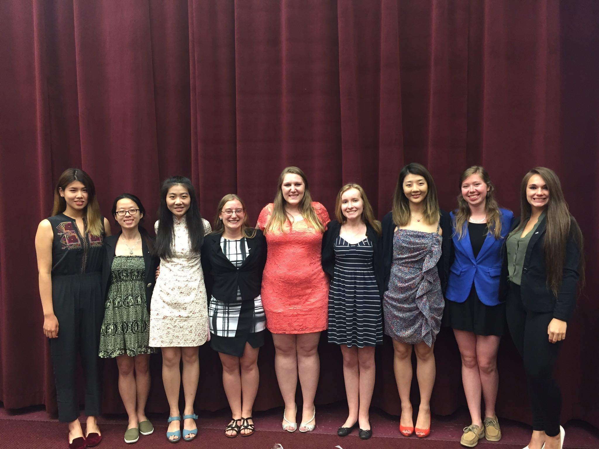

    <!--background color-->
    <script type="text/javascript">
        document.write ('<body style="background: Gainsboro; background-attachment: fixed;">')
    </script>

    <section id="conference" class="black-frame about about-container about-container-top">
      <h1>{{ page.title }}</h1>

      <div class="icon-about">
        
      </div>

      <h2 class="first">Gamma Class</h2>

      <p>
        Casey Ching | Environmental Engineering
        <br>Siyi Florence Feng | Industrial and Systems Engineering (Secretary '16-'17)
        <br>Yuan Irene Gao | Mechanical Engineering
        <br>Hannah Lambert | Computer Science (Treasurer ‘16-’17 Secretary '17-'18)
        <br>Anna Kjersgard | Computer Engineering
        <br>Spencer Nush | Environmental Engineering (Vice President '16-'17)
        <br>Athanasia Qirjollari | Chemical Engineering
        <br>Yujing (Jenny) Zhao | Industrial and Systems Engineering
      </p>

      <h2 class="first">Delta Class</h2>

      <p>
        Teresita Liebel | Mechanical Engineering (President '16-'17)
        <br>Rebecca White | Mechanical Engineering
        <br>Emma Williamson | Civil Engineering
        <br>Ashley McKendry | Civil Engineering
        <br>Madison Jenkins | Computer Engineering
        <br>Zhongrui (Tracy) Liu | Material Science
      </p>

      <h2 class="first">Epsilon Class</h2>

      <p>
        Sara Anderson | Sociology and Anthropology
        <br>Trang (Sammi) Nguyen | Computer Science and Business
        <br>Lara Reid | Bio Engineering (Treasurer ‘17-’18)
        <br>Angelika Wyzlic | Bio Engineering (Membership Educator ‘16-’17 VP ‘17-’18)
        <br>Talia Rodkey | Bioengineering 
        <br>Stephanie Leibel | Mechanical Engineering
      </p>
      
      <h2 class="first">Zeta Class</h2>

      <p>
        Jennifer Boeker | Chemical Engineering (Membership Educator ‘17-’18)
        <br>Siu-Yee Ching | Chemical Engineering
        <br>Ritika Poddar | Computer Science and Business
        <br>Hsiao Chen Yeh | Industrial and Systems Engineering
        <br>Rebecca Lentz | Electrical Engineer
        <br>Baozhu (Judy) Lu | Industrial and Systems Engineering
        <br>Emma Tao | Civil Engineering (Secretary ‘18-’19)
        <br>Casey Urban | Environmental Engineering (President ‘17’-18)
      </p>

      <h2 class="first">Eta Class</h2>

      <p>
          Rebecca Salsburg-Frank | Mechanical Engineer
      </p>
    </section>

